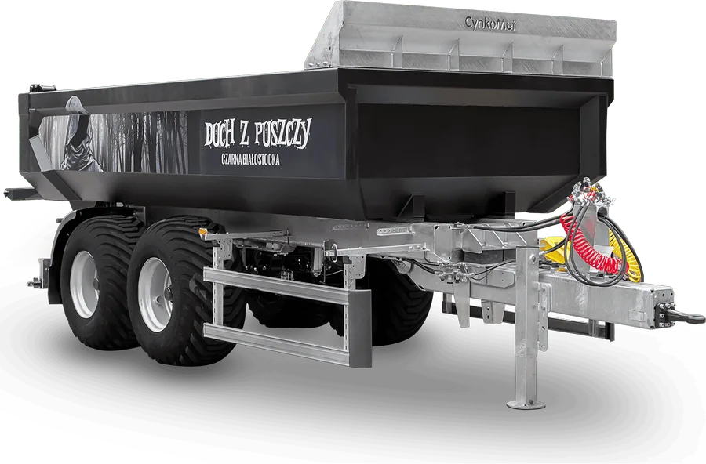

Części CYNKOMET z ceną i zamówieniem online
Wybierz swoją przyczepę albo rozrzutnik i od razu zobacz pasujące części z ceną netto. Zamówienie trafia prosto do działu sprzedaży części zamiennych w Czarnej Białostockiej.
- Maszyny ocynkowane ogniowo
- Oryginalne części do konkretnych modeli
- Cynkownie w Czarnej Białostockiej i Wyszkowie

Części zamienne
Te same kategorie co w dziale części CYNKOMET – teraz z numerem, ceną i przyciskiem „Dodaj”.
1Wybierz maszynę
Wycena cynkowania online
Zamiast formularza PDF: podaj masę i wymiary elementu, a strona od razu sprawdzi, czy zmieści się w wannie, i policzy orientacyjną cenę.